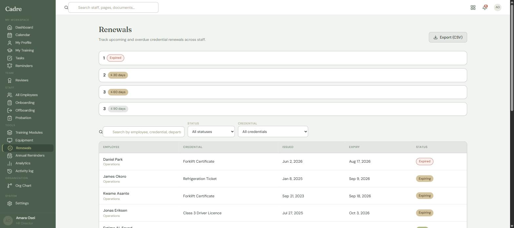

Still tracking forklift tickets, first aid and fall protection in a spreadsheet? Cadre keeps every certification on the employee record, with the training that renews it in the same system, so completing the course closes the expiry.
The demo is the real product with a sample company loaded. Check the screenshot against it: 47 staff, 20 credentials, 1 expired and 4 expiring inside 30 days, on one screen.

Not because it is a spreadsheet. Because of what it cannot know.
A ticket renewed on a Tuesday is not in the file until somebody types it in. Between those two moments the sheet is confidently wrong, and it looks exactly the same as when it is right.
Whoever built it knows which tab is current and which column is stale. That knowledge is not in the file. It leaves when they take a week off, and it leaves for good when they do.
You can ask a sheet who was current at the last edit. You cannot ask it who is qualified to go up the lift this morning, which is the only question anyone actually asks.
Four capabilities, in the order they matter.
An issue date, a renewal period and an expiry, per person and per ticket. Not a text field somebody types "current" into.
By email and Microsoft Teams, before the date rather than after it, so there is still time to book the course.
The training record and the certification are the same record, so the renewal clears the reminder. Nothing is re-keyed and nothing is chased twice.
Filtered by site, by ticket or by status, as a CSV. The question an auditor asks is a screen, not an afternoon.
This is the part a dedicated expiry tracker cannot do. The reason the spreadsheet survives next to an HR tool is that neither one holds the whole person.
Per-seat pricing charges you for hiring, and the crews who need tickets are the headcount that grows. So Cadre does not price that way.
Headcount, how many sites, and which tickets you track today. That is enough for a flat monthly figure by email. There is no discovery call in front of it.
Get a figure by emailhello@aevon.ca · add a phone number
Cadre grew out of a system running in production at a 75-person organisation in BC, where it handles records, onboarding, training and credentials for the whole staff. That is one deployment. It is the only one we will claim, and we are not going to show you a wall of logos we do not have.
It is built by Aevon, a software company in the Lower Mainland. You deal with the person who writes it, which is a real limit on how many customers we can take on and also the reason the product fits the way these companies work. The demo is the entire product with nothing held back, so you can judge all of that yourself.
Yes, and you should. The demo is the real application with a sample company loaded, signed in as an HR director. Nothing is a screenshot. Change things.
Companies where the employer, not the individual, is accountable for the workforce's tickets: trades and construction, transport and fleet, manufacturing, food processing, security. Roughly 15 to 150 staff. Below about 15 nobody owns renewals yet and a spreadsheet genuinely is fine.
Usually yes, and that is the point, because running both is how the double entry starts. If you are locked into payroll elsewhere that is fine, because payroll is the one thing Cadre deliberately does not do.
No, on purpose. Payroll is regulated, solved and well served. Cadre imports from your payroll system so the employee list stays in step.
Days. The work is importing your people and naming your sites, departments and credential types. We do that with you rather than sending a CSV template and wishing you luck.
Ten minutes in the demo answers more than a call would.